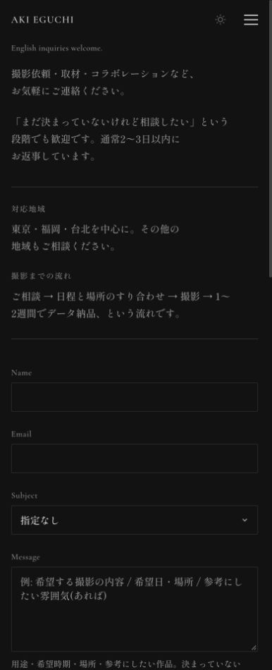
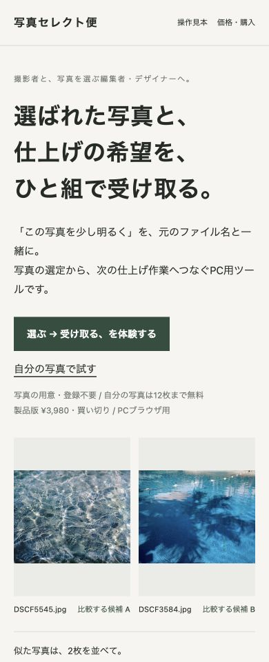
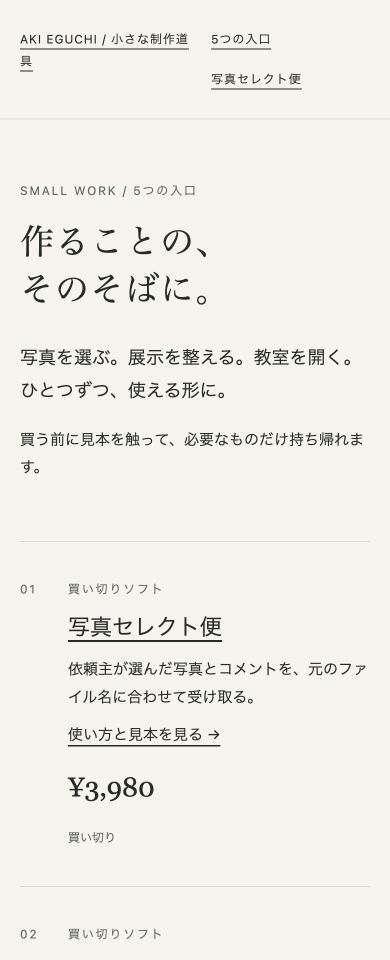

1. 点検の相談でも、何を書けばよいかを伝える
- 相談欄の上に「撮影の相談／サイト点検の相談」の短い記入例を置く。
- 点検の入口から来た人には、サービス名とURLを含む相談文を用意する。
- 390pxで入力例を確認し、撮影だけが相談対象に見えないか確かめる。
完了の確認：撮影とサイト点検の両方について、最初に送る情報が入力前に分かる。撮影依頼の案内を削除せず、点検相談に原本写真・パスワードを求めない。
納品見本 / 制作元サイトの点検
初めて訪れる人が、使う道具と相談先を選べる案内にする。
制作元自身の公開3ページを点検した納品見本です。顧客案件・受注実績ではありません。撮影時点の記録を使っており、その後の変更を含む現行ページとは異なる場合があります。
Contact / 相談先
https://akieguchi.com/contact
写真セレクト便 / 使い方と無料体験
https://akieguchi.com/tools/photo-select-bin.html
小さな制作道具 / 道具の一覧
https://akieguchi.com/tools/small-work/index.html
画面の確認日時：2026年10月1日 16:21（日本時間）。見本作成：2026年10月1日。
優先 1 / Contact

撮影した390px画面では、説明と流れが撮影の相談を中心にしており、Message欄の入力例も「希望する撮影の内容／希望日・場所／参考にしたい雰囲気」です。
月々点検など別のサービスから来た人には、対象URLと目的を送ってよい相談先なのかが伝わりにくい可能性があります。実際に困った人の行動は未確認です。
現状の文面
例：希望する撮影の内容／希望日・場所／参考にしたい雰囲気（あれば）
書き換え案 / 未実装
例：相談したいサービス名／公開ページのURL／困っていること／希望納期。撮影の場合は希望日・場所もお知らせください。
相談を入力する欄のすぐ上に、サービス別の記入例を置く。撮影の案内は残し、点検の目的・対象URL・納期を足す。
撮影とサイト点検の両方について、最初に送る情報が入力前に分かる。撮影依頼の案内を削除せず、点検相談に原本写真・パスワードを求めない。
相談者が対象URLと目的を送れたかを実相談で確認する。入力例だけで問い合わせが増えたとは判断しない。
優先 2 / 写真セレクト便

PCと390px画面には「選ぶ → 受け取る、を体験する」と「自分の写真で試す」の2つの入口があり、その下に「写真の用意・登録不要／自分の写真は12枚まで無料」とまとめて補足されています。
写真を用意せずに確認できる体験と、写真を用意する体験の違いを入口ごとに説明すると、目的に合う方を選びやすくなると考えます。クリック・離脱の原因は未検証です。
現状の文面
選ぶ → 受け取る、を体験する
自分の写真で試す
書き換え案 / 未実装
見本の写真で、受取りまで見る
自分の写真12枚で、往復を試す
各入口のすぐ下へ、それぞれ「写真の用意・登録不要」「相手へ渡すファイルと回答の返却を試せます」を置く。新しい機能は足さない。
クリック前に、写真を用意する必要の有無と、どこまで体験できるかを区別できる。リンク先・無料12枚・PC用という既存の条件を変えない。
入口ごとのクリックと無料体験の往復完了を別に確認する。クリックを購入や売上に数えない。
優先 3 / 小さな制作道具

390px画面では「作ることの、そのそばに。」と「写真を選ぶ。展示を整える。教室を開く。」の案内の後に、01「写真セレクト便」、02「展示の台帳」の順で道具が並びます。
初めて見る人には、道具名より困っている作業から選べる案内が役立つ可能性があります。どの入口が選ばれているかは今回の画面点検からは分かりません。
現状の文面
作ることの、そのそばに。
書き換え案 / 未実装
写真の受渡し、展示の準備、教室の募集。
今の作業から、道具を選ぶ。
冒頭の説明の下に、用途別の3つの入口を置く。既存の各紹介へ進め、無料見本と購入を区別する。道具の仕様や価格は変えない。
商品名を知らなくても用途から紹介へ進める。準備中の商品に架空の購入リンクを置かず、見本の利用を購入と混同させない。
用途別の紹介クリック、見本の利用、実注文を分けて記録する。掲載だけで需要があると判断しない。
修正する人へ渡すメモ
完了の確認：撮影とサイト点検の両方について、最初に送る情報が入力前に分かる。撮影依頼の案内を削除せず、点検相談に原本写真・パスワードを求めない。
完了の確認：クリック前に、写真を用意する必要の有無と、どこまで体験できるかを区別できる。リンク先・無料12枚・PC用という既存の条件を変えない。
完了の確認：商品名を知らなくても用途から紹介へ進める。準備中の商品に架空の購入リンクを置かず、見本の利用を購入と混同させない。
修正担当者にこの順番と文例を渡し、変更後の同じ画面で確認します。改善案を全部採用する前提ではありません。目的に合うかを確認し、必要なものから直します。
サイトの修正作業は点検料金に含みません。実際の依頼では対象と目的を合意し、対象ページごとの記録を取って納品します。